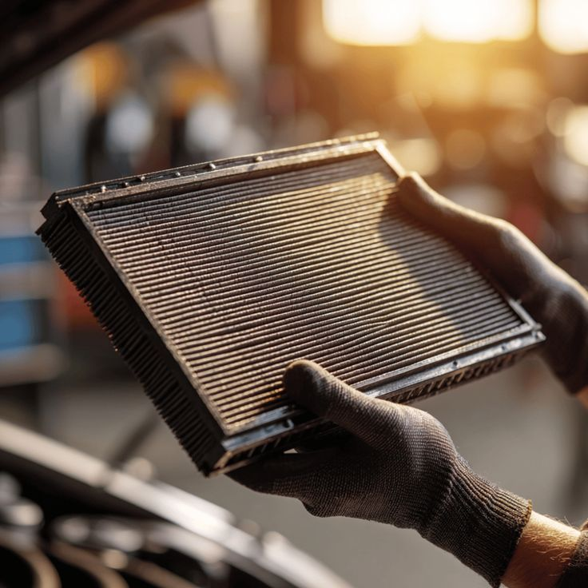
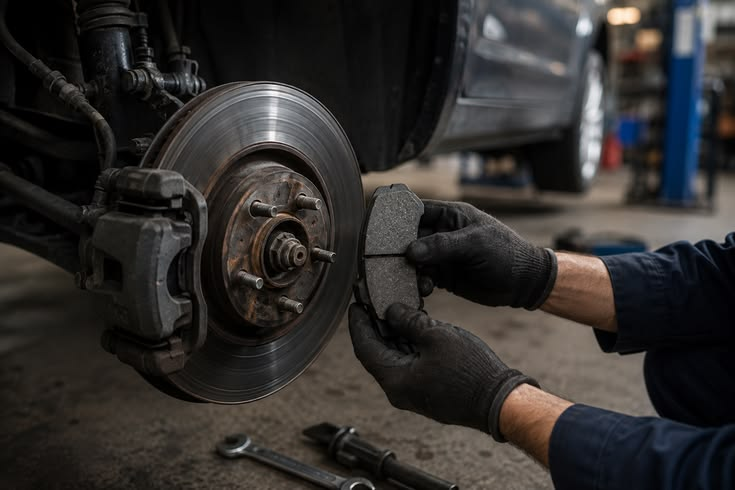
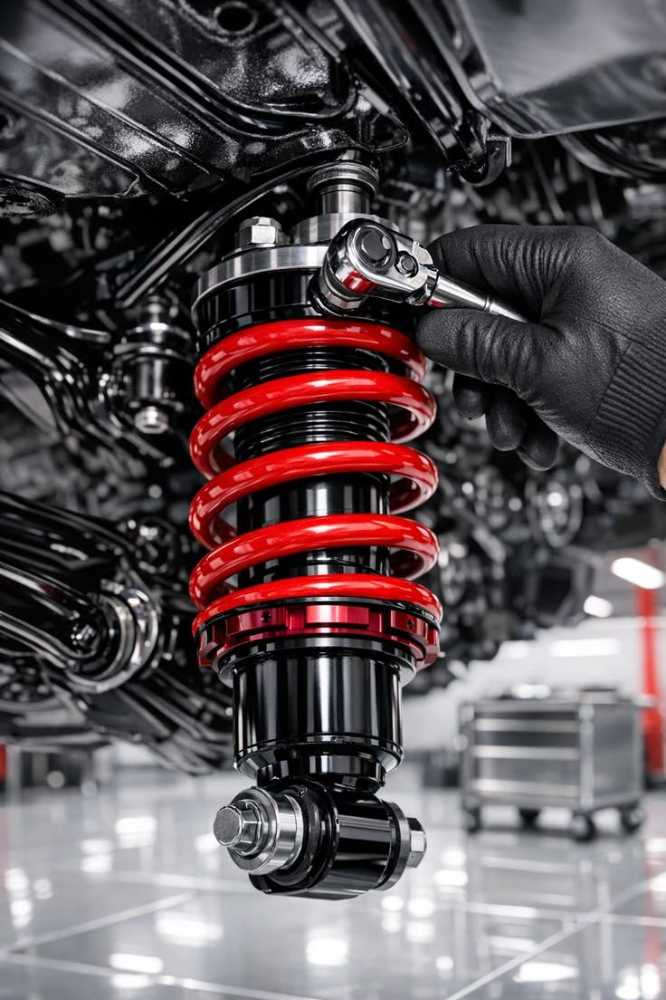
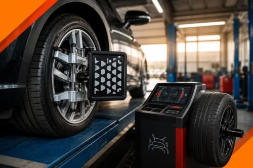
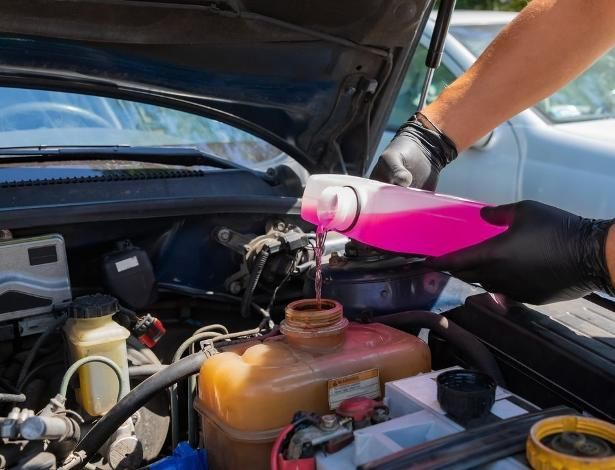

Troca de óleo
Troca de óleo rápida e completa para o seu veículo: substituímos o lubrificante e o filtro conforme as especificações da montadora, além de checar os demais fluidos. Agende a sua manutenção e garanta a proteção e a eficiência do seu motor!

Troca Filtro
Substituímos os filtros do seu veículo com rapidez e peças de alta qualidade, garantindo o bom desempenho do motor, economia de combustível e a saúde dos ocupantes.

Substituição das Pastilhas de Travão
Realizamos a troca das pastilhas de travão (freio) do seu veículo com agilidade e peças de alta qualidade, garantindo a máxima segurança na travagem, menor distância de paragem e a preservação dos discos.

Manutenção do sistema de suspensão
Realizamos a inspeção e a reparação completa do sistema de suspensão do seu veículo, garantindo estabilidade, conforto ao dirigir e a aderência ideal dos pneus ao solo.

Alinhamento e Balanceamento de Rodas
Realizamos a regulagem precisa da geometria da suspensão e do equilíbrio do conjunto de rodas e pneus, garantindo maior controlo do veículo, conforto ao conduzir e máxima durabilidade dos pneus.

Troca do Líquido de Refrigeração (Líquido de Arrefecimento)
Realizamos a substituição completa do fluido de arrefecimento e a limpeza do sistema, garantindo a temperatura ideal de trabalho do motor e prevenindo o superaquecimento.